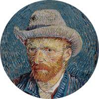

GALERIA

Vincent van Gogh
Nunca es tarde para empezar
Su primer trabajo fue en una galería de arte. Más tarde se convirtió en pastor protestante y en 1879, a la edad de 26 años, se marchó como misionero a una región minera de Bélgica, donde comenzó a dibujar a la gente de la comunidad local. En 1885 pintó su primera gran obra

Museo en La Paz
Acerca de La Casa museo Solón es una entidad cultural ubicada en La Paz y administrada por la Fundación Solón, que alberga la obra del pintor y muralista boliviano Walter Solón. Está situada en la calle Ecuador de la zona de Sopocachi.
ir a ver